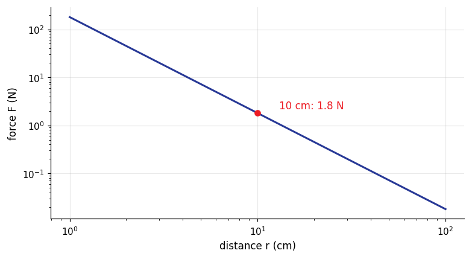
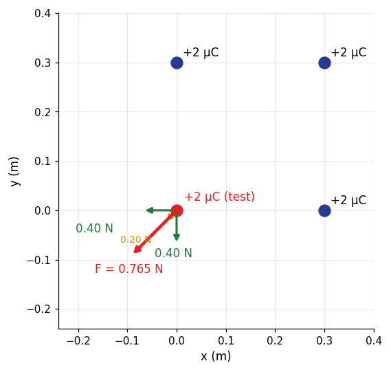

How it is asked: Force between two charges; Where is the equilibrium point.
Coulomb's law: method and traps
Method
Convert charges to coulombs and distances to metres.
Magnitude from Coulomb's law, direction from the signs (repel/attract).
Several charges: add the force vectors component by component.
Watch out
Doubling the distance divides the force by 4.
Superposition of electric forces
The net force on a charge is the vector sum of the forces from every other charge, each computed as if the others were absent.
Key formulas
$\vec F_{net}=\sum\vec F_i$; equilibrium of a third charge on the line between two charges: $\dfrac{q_1}{x^2}=\dfrac{q_2}{(d-x)^2}$
How it is asked: Net force on the corner charge of a square.
Superposition of electric forces: method and traps
Method
Draw each force with its direction.
Resolve into $x$, $y$ components and add.
Equilibrium: set the sum to zero and isolate the position.
Watch out
Adding magnitudes instead of vectors.
Coulomb's law: force against distance

$q_1=1\,\mu\mathrm{C}$ and $q_2=2\,\mu\mathrm{C}$. On log-log axes the force is a straight line of slope $-2$: doubling the distance divides the force by four. At $10\,\mathrm{cm}$ it is $1.8\,\mathrm{N}$.
$q_1=+2\,\mu\mathrm{C}$ at $x=0$, $q_2=-3\,\mu\mathrm{C}$ at $x=0.10\,\mathrm{m}$, test charge $+1\,\mu\mathrm{C}$. The force is repulsive near $q_1$, attractive near $q_2$ and passes through zero once, at $x=-0.445\,\mathrm{m}$ (outside, on the side of the weaker charge).
$$F(x)=kq_3\sum_i q_i\,\frac{x-x_i}{|x-x_i|^3}$$
Superposition of forces: the fourth corner of a square

Charges $+2\,\mu\mathrm{C}$ at three corners of a square of side $0.30\,\mathrm{m}$ act on a fourth $+2\,\mu\mathrm{C}$: two forces of $0.40\,\mathrm{N}$ along the sides and one of $0.20\,\mathrm{N}$ along the diagonal. Resultant $0.765\,\mathrm{N}$ along the diagonal.
Practice bank, filtered to this chapter, then written mode
Question analyser: paste a question to see the concepts, formulas and traps
Then the mock exams (Exams page)
Plots and data files
3 plots, each computed from the physical law and checked a second way (numerical integration, an ODE solver, a second formula); the CSV beside each plot holds the numbers behind it, so you can re-plot or fit them. Download all 3 CSV files of this module (zip)
Coulomb's law: force against distance $q_1=1\,\mu\mathrm{C}$ and $q_2=2\,\mu\mathrm{C}$. On log-log axes the force is a straight line of slope $-2$: doubling the distance divides the force by four. At $10\,\mathrm{cm}$ it is $1.8\,\mathrm{N}$. 61 rows · columns: r_m, F_NCSVNet force on a test charge near two fixed charges $q_1=+2\,\mu\mathrm{C}$ at $x=0$, $q_2=-3\,\mu\mathrm{C}$ at $x=0.10\,\mathrm{m}$, test charge $+1\,\mu\mathrm{C}$. The force is repulsive near $q_1$, attractive near $q_2$ and passes through zero once, at $x=-0.445\,\mathrm{m}$ (outside, on the side of the weaker charge). 370 rows · columns: x_m, F_NCSVSuperposition of forces: the fourth corner of a square Charges $+2\,\mu\mathrm{C}$ at three corners of a square of side $0.30\,\mathrm{m}$ act on a fourth $+2\,\mu\mathrm{C}$: two forces of $0.40\,\mathrm{N}$ along the sides and one of $0.20\,\mathrm{N}$ along the diagonal. Resultant $0.765\,\mathrm{N}$ along the diagonal. 4 rows · columns: source, Fx_N, Fy_NCSV
Worked examples from the course problems
Worked example 1 · Coulomb's law (Homework session 1, Q1(a))
Two identical conducting spheres, fixed in place, attract each other with a force of $0.108\,\mathrm{N}$ when their centres are $50.0\,\mathrm{cm}$ apart. They are then joined by a thin wire and the wire is removed; now they repel each other with a force of $0.0360\,\mathrm{N}$. The initial net charge is positive. What was the negative charge on one of the spheres?
Show the answer and the solution
Answer: $-1\times10^{-6}\,\mathrm{C}$
Before: $q_1q_2=-\dfrac{Fr^2}{k}=-3.00\times10^{-12}\,\mathrm{C^2}$ (opposite signs).
After touching, identical spheres share the net charge equally: $\left(\dfrac{q_1+q_2}{2}\right)^2=\dfrac{F'r^2}{k}\Rightarrow q_1+q_2=2.00\times10^{-6}\,\mathrm{C}$ (positive).
So $q_1,q_2$ are the roots of $x^2-2.00\times10^{-6}x-3.00\times10^{-12}=0$: $x=+3.00\times10^{-6}$ and $-1.00\times10^{-6}\,\mathrm{C}$.
Worked example 2 · Coulomb's law (Homework session 1, Q1(b))
For the two identical conducting spheres of the previous problem (attraction $0.108\,\mathrm{N}$ at $50.0\,\mathrm{cm}$; after contact repulsion $0.0360\,\mathrm{N}$; positive net charge), what was the POSITIVE charge on the other sphere?
Show the answer and the solution
Answer: $3\times10^{-6}\,\mathrm{C}$
The two initial charges are the roots of $x^2-(q_1+q_2)x+q_1q_2=0$ with $q_1+q_2=2.00\times10^{-6}$ and $q_1q_2=-3.00\times10^{-12}$: $+3.00\times10^{-6}\,\mathrm{C}$ and $-1.00\times10^{-6}\,\mathrm{C}$.
Worked example 3 · Coulomb's law (Homework session 1, Q2(a))
Four particles sit at the corners of a square. Particles 1 and 4 (on one diagonal) have charge $Q$; particles 2 and 3 (on the other diagonal) have charge $q$. What is $Q/q$ if the net electrostatic force on particles 1 and 4 is zero?
Show the answer and the solution
Answer: $-2.83$
Force on particle 1 from its two neighbours (charge $q$, distance $a$) points along the sides: each has magnitude $\dfrac{kQq}{a^2}$, resultant $\sqrt2\,\dfrac{kQq}{a^2}$ along the diagonal.
The opposite corner (charge $Q$, distance $a\sqrt2$) pushes along the diagonal with $\dfrac{kQ^2}{2a^2}$. Balance: $\sqrt2\,Qq=-\dfrac{Q^2}{2}$, so $\dfrac Qq=-2\sqrt2=-2.83$.
Worked example 4 · Coulomb's law (Homework session 1, Q2(b))
In the same square (charges $Q$ on one diagonal, $q$ on the other), is there any value of $q$ (for fixed $Q$) that makes the net electrostatic force zero on ALL four particles?
Show the answer and the solution
Answer: No: balance on particles 1, 4 needs $Q/q=-2\sqrt2$ but on 2, 3 it needs $Q/q=-1/(2\sqrt2)$
For particles 2 and 3 the roles are exchanged: zero force needs $q/Q=-2\sqrt2$, i.e. $Q/q=-1/(2\sqrt2)=-0.354$. The two conditions $-2.83$ and $-0.354$ contradict each other, so no value of $q$ works.